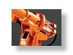

Overview
|
|
Intelligent Control of Robot Manipulators for Performance Enhancement.
The design and production of high-performance servo-systems for robot manipulators in a cost effective and timely manner is one of the ultimate challenges to engineers today. Three key performance criteria for modern robot manipulators are 1) speed, 2) accuracy and repeatability and 3) vibration suppression. To respond to performance requirements becoming more and more stringent, the mechatronics approach, which gives considerations to both mechanical hardware, sensing and actuation devices, and servo software, must be pursued. The proposed research aims to enhance the performance of robots with indirect drive mechanism. In indirect drive mechanisms, the actuator (electric motor) and the link are connected via gears for speed reduction and torque amplification. The harmonic gear is the most popular means for this purpose; it is compact and may reduce the speed at the order of 100 in one stage. This allows the use of high speed and low torque motors resulting in various advantages such as lower costs and lighter weights. In the servo control of indirect drive robot joints, the current practice in industry is based on loop-by-loop gain tuning. In other words, a set of feedback gains is selected to specify the bandwidths of three servo loops: current (acceleration) loop, velocity servo loop and position servo loop. One advantage of this method is that tuning may be performed sequentially from the inner acceleration loop to the outer position loop. If we have good online measurements of state variables, we can expect that the closed-loop system will achieve the desired overall bandwidth with good robustness properties. However, the motor side position is usually the only measurement in industrial applications and other states must be estimated by observer or state estimator. The tuning of control gains and the design of observers is further complicated because the dynamics of robots depend on configuration. Namely, a set of gains tuned for one configuration may not work well for other configurations. The performance may be further limited due to parameter uncertainties and nonlinear effects such as friction, hysteresi (or backlash) and nonlinear compliance.
We plan to overcome the above mentioned difficulties in the robot servo systems by applying intelligent control and sensing methodologies. More specifically, we will study the following six items over the next twelve month period: 1) the use of robust control theory for systematic tuning of control gains, 2) the application of 1) above for selected configurations and establish optimal gain scheduling, 3) compensation of friction forces, 4) modeling and identification of robots to study oscillations and vibrations, 5) investigation on vibration characteristics and suppression of vibrations, and 6) improved design of mechanism and controllers for reduced vibration. The study will include analysis, simulation and experimentation. Concrete results are expected from the first three tasks. The remaining three tasks are related to a long term goal of establishing the design methodology for mechanism and control algorithms to eliminate or reduce oscillations and vibrations in trajectory following.
(Prof. Masayoshi Tomizuka, 2005) |